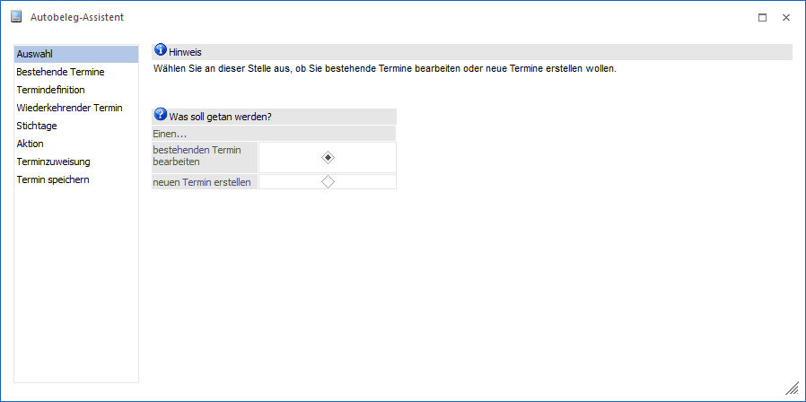
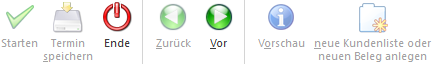

Mit der Funktion Autobeleg können Ausgangsbelege in einem bestimmten Rhythmus auf ein oder mehrere Zielkonten dupliziert werden. Die Erfassung bzw. Pflege der hierfür benötigten Stammdaten erfolgt über…
1 WinLine FAKT
1 Erfassen
1 Autobeleg
1 Assistent
…, wobei die einzelnen Teilbereiche in Form eines Assistenten dargestellt werden.
Hinweis
Die Stammdaten können auch über das Programm Aktionsplan Autobeleg erfasst und editiert werden.

Auf der linken Seite des Assistenten werden die Bereiche angezeigt, die im Zuge der Termin-Definition bearbeitet werden können:
ü Auswahl
In diesem Bereich muss
zunächst entschieden werden, ob ein bestehender Termin bearbeitet oder ein neuer
Termin erstellt werden soll.
ü Bestehende Termine
Hier werden alle
bereits angelegten Termine angezeigt und können nach Auswahl editiert
werden.
ü Termindefinition
Im Bereich
"Termindefinition" erfolgt die Definition der Terminart und deren Details (u.a.
"Einmalig" oder "Wiederkehrend").
ü Wiederkehrende Termine
In diesem
Bereich wird der Rhythmus einer Aktion festgelegt.
ü Stichtage
Im Bereich "Stichtag"
kann u.a. definiert werden ob zu, nach oder vor einem bestimmten Tag ein
definierter Zeitraum addiert / subtrahiert werden soll.
ü Aktion
In diesem Bereich wird die
Art des Autobelegs, d.h. der Duplizierung, definiert.
ü Terminzuweisung
In der
Terminzuweisung erfolgt die Zuweisung der Belege zu einem bestimmten Termin.
ü Termin speichern
Im Bereich "Termin
speichern" können die Termine und Aktionen gespeichert und auch gleich
ausgeführt werden.
Die einzelnen Bereiche können entweder direkt durch einen Klick auf den entsprechenden Eintrag auf der linken Seite angewählt werden. Alternativ können die einzelnen Bereiche auch über die Buttons "Vor" und "Zurück" angewählt werden.
Buttons

Ø Start
Abhängig vom aktuell gewählten Bereich werden unterschiedliche Aktionen durchgeführt:
ü Bestehende Termine / Termindefinition / Wiederkehrende Termine / Stichtage / Aktion / Terminzuweisung
Nach Bestätigung
des Buttons "Start" wird in den letzten Bereich des Assistenten gewechselt,
wobei es keine Rolle spielt, in welchem Bereich man sich aktuell befindet. Alle
übersprungenen Bereiche werden dabei mit den Standard-Einstellungen
versehen.
ü Termin speichern
Durch drücken des
"Starten"-Buttons wird der Autobeleg bzw. die Telefonlist gestartet. Es werden alle
zum eingegebenen Beobachtungszeitraum offenen Aktionen in der Vorschau
angezeigt, wobei aber nur der im Assistenten geladene Termin berücksichtigt
wird.
Ø Termin speichern
Nach Drücken dieses Buttons wird die Aktion gespeichert und kann später entweder im Autobeleg oder in der Telefonliste gestartet werden.
Achtung
Beachten Sie, wenn eine Änderung der Termindefinition vorgenommen wird - also Änderung des Startdatums oder des Zeitraums - werden alle nicht gerechneten bzw. nicht gedruckten Belege gelöscht.
Ø Ende
Durch Anwahl des Buttons "Ende" bzw. ESC wird das Fenster geschlossen und alle nicht gespeicherten Eingaben verworfen.
Ø Zurück
Durch Anklicken des Zurück-Buttons kann in den vorherigen Bereich zurückgewechselt werden.
Ø Vor
Durch Anklicken des Vor-Buttons gelangt man in den nächsten Bereich des Termin-Assistenten (sofern vorhanden).
Ø Vorschau
Bei Anwahl dieses Buttons wird eine Liste aller Kalendereinträge ausgegeben, die beim Speichern des Termins geschrieben würden.
Hinweis
Die Vorschau ist bei einmaligen Terminen nicht verfügbar.
Ø neue Kundenliste oder neuen Beleg anlegen (nur unter Aktion und Terminzuweisung)
Beim Druck des Buttons "neue Kundenliste oder neuen Beleg anlegen" wird je nach Einstellung der Terminart das Fenster Autobeleg - Kundenliste oder die Belegerfassung geöffnet, um eine neue Kundenliste oder einen neuen Beleg zu erfassen.